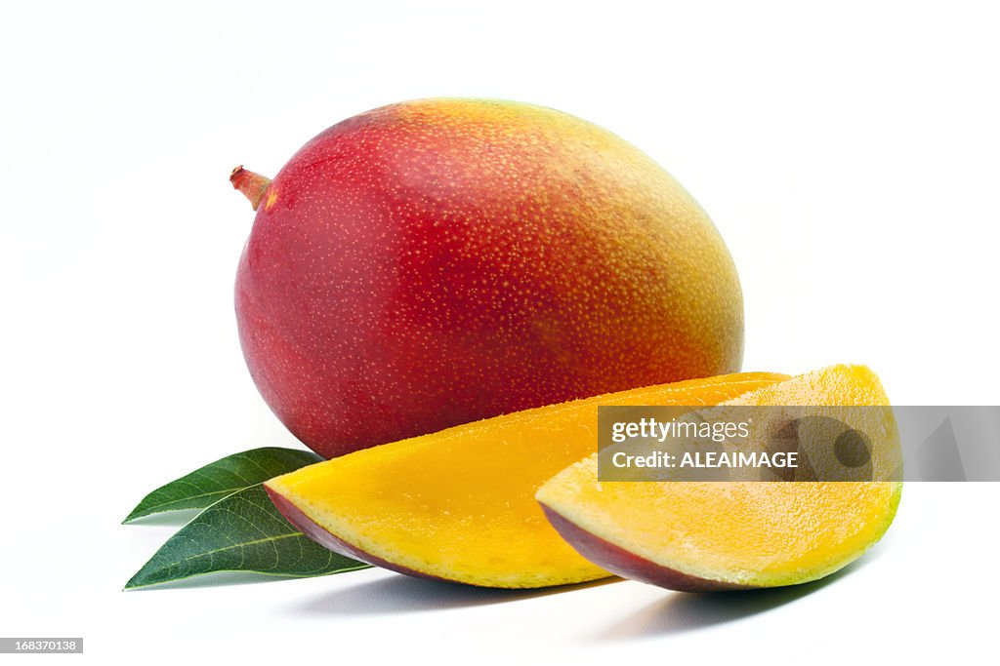

The Juicy History of Mangos

Mangos have a rich history spanning over 4,000 years. From their origins in South Asia to becoming a global symbol of tropical delight, they have enchanted cultures worldwide.
Rare Fact: In ancient Indian traditions, mango trees were considered a living emblem of eternal love and prosperity.
Takeaway: The humble mango embodies nature's timeless charm and the beauty of cultural heritage.
Health Benefits of Mangos
Mangos are not just delicious; they’re nutritional powerhouses packed with vitamins, antioxidants, and fiber that benefit your overall health.
Rare Fact: Mangos contain the enzyme amylase, which aids in starch digestion and may help reduce inflammation.
Takeaway: Every bite of a mango is a blend of taste and wellness, offering nature’s own boost.
How to Pick the Perfect Mango
Choosing the right mango can elevate your culinary experience. Learn the subtle cues and techniques that mango connoisseurs swear by.
Rare Fact: The sweet, tropical aroma of a mango is the most reliable indicator of its ripeness—a secret tip known to seasoned fruit enthusiasts.
Takeaway: Trust your senses; a perfectly ripe mango is all about that inviting fragrance.